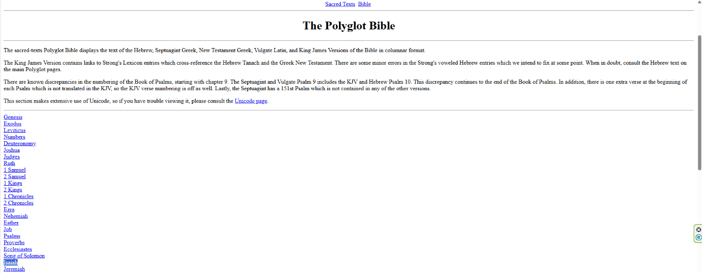
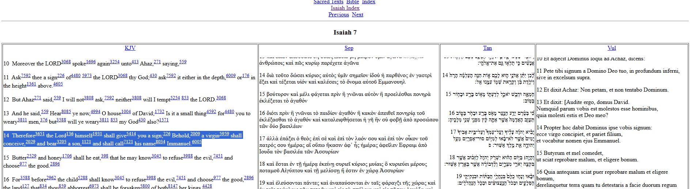
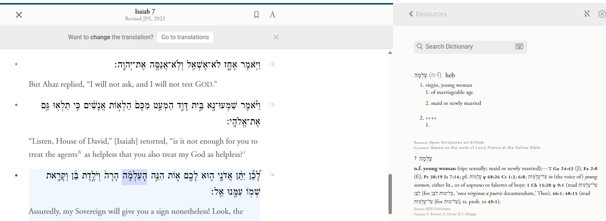
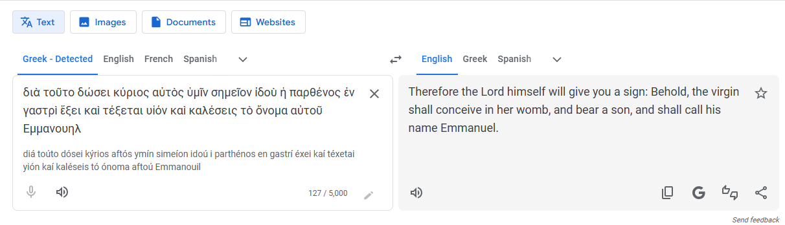
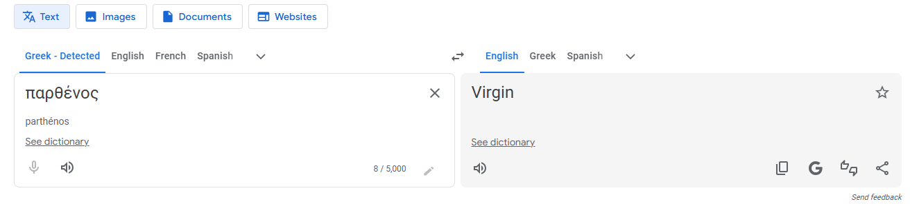

Blessed Sabbath to you all! I won't get into the details of how the commandment to keep the Sabbath gets elevated to a much higher standard in the New Testament — like all the other commandments, looking at you, Matthew 5 — but I will elevate it a bit from the Old Testament itself. Isaiah 58 is a tremendous chapter, one that should be memorized in its entirety. Here's a piece of it:
“Keep the Sabbath day holy. Don't pursue your own interests on that day but enjoy the Sabbath and speak of it with delight as the Lord's holy day. Honor the Sabbath in everything you do on that day, and don't follow your own desires or talk idly. Then the Lord will be your delight. I will give you great honor and satisfy you with the inheritance I promised to your ancestor Jacob. I, the Lord, have spoken!” — Isaiah 58:13–14
But what I really want to share is an update on my deeper research into the Septuagint (LXX). As you might recall from my last email on this, my conclusion at the time was that it's indeed inspired, but not to the same extent as the JPS/Tanakh. I was watching a video this morning by Stephen Hackett, one of my Greek instructors at Biblical Mastery Academy. He was extremely helpful on how to use the Septuagint effectively in daily Bible study, but he said so much more that I think you'll all want to hear. It's generally agreed the best way to study the Bible is the Inductive method — Observation, Interpretation, Application — but I'm now convinced Correlation deserves a place in there too. In my own life, correlation has been key to understanding the Bible. Whoever first said “interpret Scripture with Scripture” was a genius. I'd encourage you all to make your method: Observation, Interpretation, Correlation, Application. You'll see why if you watch this 16-minute video.
A few of his questions to pique your interest: Who gave the Law to Moses on Mt. Sinai? Moses? Why do you say that? Then read Galatians 3:19, Hebrews 2:2, and Acts 7:53. Now who do you think gave the Law to Moses? Does the Bible contradict itself? What method of Bible study helps you resolve that? There are 283 Old Testament verses quoted in the New Testament — where did the NT authors get their wording from? Remember, for many people in the early church, their Bible was the Septuagint. Assuming Hackett is right, are there other verses that help solve this apparent contradiction? Look at Deuteronomy 33:1–2 in the Hebrew JPS/Tanakh — nothing especially helpful there. Now read it again in the Septuagint. That's why Stephen, Paul, and the author of Hebrews state their case so matter-of-factly. Conclusion: the Bible matters, the Septuagint matters, textual criticism matters.
Tomorrow is my birthday — I'll be 67. One month shy of being a Christian for 50 years. Glory to God!
For those of you who want the practical version of how I actually study this, here's my method for looking up a word across the Hebrew, Greek, and English:
1. Go to Sacred-texts.com. Choose the book of the Bible you want to study, then choose the chapter and select the verse of interest — the site lays out a Hebrew/Greek/English polyglot comparison side by side.


2. Go to Sefaria.org to investigate the Hebrew word. Click on the Hebrew word for “virgin,” הָעַלְמָה, and Sefaria pulls up the lexical study behind it.

3. Go to Google Translate to investigate the Greek word. Cut and paste the Greek text from the Septuagint column found in step one.

Note the word used for virgin: παρθένος.

From there you can use any Bible dictionary online to compare the words and their nuanced differences — I recommend Vine's Dictionary of OT and NT Words, available free through StudyLight.org, Blue Letter Bible, or as a standalone PDF if you search around.
Whew. I need to take a break right now. I'll finish this up later. — Erv
PS — for context, this whole thread started with an earlier email where I admitted I wasn't quite ready to call the Septuagint equally inspired alongside the Hebrew OT and Greek NT, even though I use it constantly and find it extremely valuable. My rule of thumb has been: when the LXX and the Hebrew Tanakh conflict, default to the Hebrew. I still think that's the wise, safe posture — even as I keep digging into just how much weight the Septuagint carries.
Comments